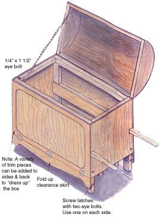
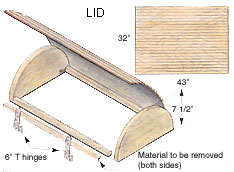
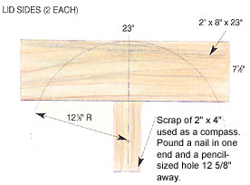
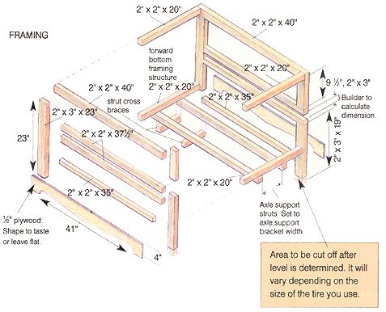
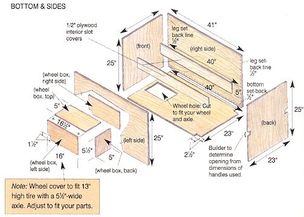
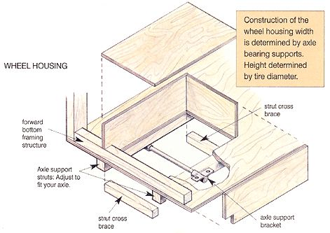

When the hearth dies down and the wind starts howling, the last thing I want to do is dash out into the rain and snow for a load of firewood. It occurred to me that keeping the woodbox in the house would increase my level of comfort - and if I could disguise it as a piece of fine furniture, my wife might just let me keep it there.
Before you jump to the main project it's always smart to gather your materials. Construct the box lid first and set it aside for later attachment. First, cut two 23"-long half circles out of a 2" x 8" piece of wood. (You probably won't have a compass big enough to scribe the arc, so make one out of a flat stick: Pound a nail through one end, then mark a spot 12 5/8" from the nail and drill a pencil-sized hole.)
Next, for the cross strips, cut two pieces of 2" x 2" stock to 38". Glue and nail these to the bottom inside of the half circles and plane the 2" x 2" to fit the curve of the circle (see diagram at right). Then, cut a piece of 1/2" plywood to 43" x 32" and groove a series of 1/4"-deep channels 1 1/2" apart. This gives the plywood flexibility (use a table saw or a skill saw with a plywood blade). Glue and nail the top to the half circles and the cross strips. The panel is a little oversized so that the fit can be adjusted. After the glue has dried, trim off the excess wood.
For the rest of the project, I scavenged a wheel, axle and handles from an old wheelbarrow. You can also get all of these parts at any decent hardware store. Either way the sizes will vary, so you will have to make a few calculations for the handle slots, the wheel hole in the bottom panel, the axle strut spacing, the wheel enclosure dimensions and the legs that hold up the handle end of the box.
The box is designed so that the handles fit inside the handle slots. Just measure your handles' girth and add 1/6" for clearance, then cut the slots to a length of 38". A word of caution: When you are gluing up, be sure to wipe off all excess glue from inside the slots, otherwise the handles won't fit.
Cut the bottom plywood panel to the dimensions given in the diagram below then mark a centerline from front to back. Cut the two axle support struts and place them on the bottom, spacing them left and right of the centerline at a distance that will allow the axle support brackets to rest on the struts. Ensure that the struts are parallel to the centerline, then scribe the plywood using the insides of the struts as a guide. Take the struts off. Come back 1 1/2" from the front end of the plywood and scribe a line parallel to the end between the wheel strut scribemarks. Measure the diameter of the tire you are using and add 3 1/2". Measure that dimension from the front end of the plywood and scribe another line between the wheel strut scribemarks. You should now have a rectangle approximately 4" x 16". Cut out the rectangular hole. Temporarily mount the axle support struts (using screws). Mount the wheel and axle in the center of the rectangular hole. Turn the assembly over. Support the four corners of the plywood so the bottom remains upright and steady (cinder blocks work nicely). Glue and nail the forward framing structure in place on the bottom (see " Framing " diagram).
Build the enclosure around the wheel following the example illustrated in the "Wheel Housing" diagram on page 66. With the wheel in place, you can determine the dimensions of the plywood pieces that comprise the wheel enclosure. Simply make the pieces large enough to allow for at least 1" of clearance all around the tire. Also, the wheel hole should be completely enclosed. Flip the assembly over and remove the wheel and strut assembly. Now, permanently install the wheel enclosure by gluing and nailing it from the bottom up. Measure, cut and install the two strut cross braces.
Material List
• 2" x 8" x 4" Douglas Fir stock
• 2 ea., 1/2"x 4' x 8' exterior plywood sheets
• 7 ea., 8' lengths of 2" x 2" Douglas Fir stock
• 2 ea., 8' lengths of 2" x 3" Douglas Fir stock
• 16-oz bottle, waterproof carpenter's glue
• Epoxy (optional) - enough to "paint" 30 sq. ft.
• 1 1/4", 1/4-lb. finish nails
• Small box 1 1/4" drywall screws
• 2 ea., 1/4" x 1 1/2" galvanized eye bolts
• 4', 1/4" rope
• 4 ea., window screen hooks; 8 ea., corresponding eyes
• 2 ea., 6" T hinges
• 6 ea., 1 1/2" hinges
• Wheelbarrow tire/wheel, axle/axle supports
• 2 ea., 1 5/8" x 1 3/8" x 38" wooden handles
Cutting List
2' Y, 2" DOUG. FIR STOCK
4 @ 20"
4 @ 40"
4 @ 37 1/2"
2 @ 35"
2" X 3" DOUG. FIR STOCK
2 @ 23"
2 @ 9 1/2"
2 @ 19"
PLYWOOD
2 @ 23" x 25"
2 @ 41"x25"
1 @ 40" x 23"
1 @ 43" x 32"
If you haven't already done so, cut the two plywood side panels and their corresponding framing pieces. Glue and nail the framing pieces to the panels. Note the 1/2" setback lines on the sides and bottom (see " Bottom and Sides " diagram). This spacing is necessary because the front, back and bottom panels are enclosed by the side panels. Screw the left and right 1/2" plywood interior slot covers in place (after you have sealed, painted, or epoxied inside the slot). Cut the front and back panels and their respective framing pieces. Join the two sides to the bottom, then join the front and back panels to the assembly.
The last bit of calculating you have to do will determine the length of the box's legs - they should be even with the wheel you've chosen. Seal and paint the inside of the wheel enclosure, put the wheel assembly back on and turn the box to its upright position on some kind of flat surface. Be sure the tire pressure is up to snuff. Measure the distance from your flat surface to the front edge of the bottom of the box, then do the same for the back edge. The difference between the two dimensions is what you cut off the bottom of the legs to make the box level.
What you do with the finer points of the design like painting or decoration is up to you. At this point in the project, if you so desire, you can add some trim to fancy the box up a bit, along with whatever touches will help it correspond to your decor. If you want to leave the box plain, go ahead and seal and paint (or varnish) the box and lid. Be sure to thoroughly seal all the plywood edges! As a side note, I like to seal plywood edges with epoxy; in fact, I use epoxy to glue all the parts together. This stuff is a little more difficult to work with than regular carpenter's glue, but the joints and seals are absolutely bulletproof. Epoxy is also abrasion-resistant, so you might want to paint the inside of the box with it.
Cut and mount the flip-up clearance skirts using three 1 1/2" hinges per side. (The dimensions are only a suggestion; you can use whatever size you find in your tool box or in that coffee can on the shelf.) The purpose of the skirt is to hide the wheel when the box is indoors. Flip it up for more ground clearance and secure it with window screen hooks, whenever you make those now infrequent trips to the woodpile.
At last, it is time to put the lid on. Prebend the 6" T-hinges and screw them into position on the lid. Then, drill holes and screw in the two 1/2" x l 1/2," eye bolts: one in the box, one in the lid. Tie a rope on the box eye bolt and drop it into the box. Place the lid on the box and screw in the hinges opposite the side that you want to open when the box is in the living room. Open the lid and tie the loose end of the rope through the lid's eye bolt. (It's important to make sure it opens far enough so as not to snap shut on little fingers.) Except for running outside for that first load of wood, I think that ought to do it. And if you insert the handles, it makes lifting the box much easier. Happy gathering!
|
 |
 |
 |
|
 |
 |
 |